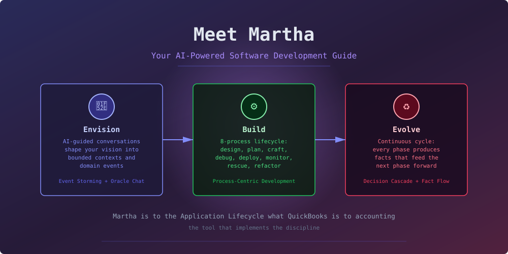
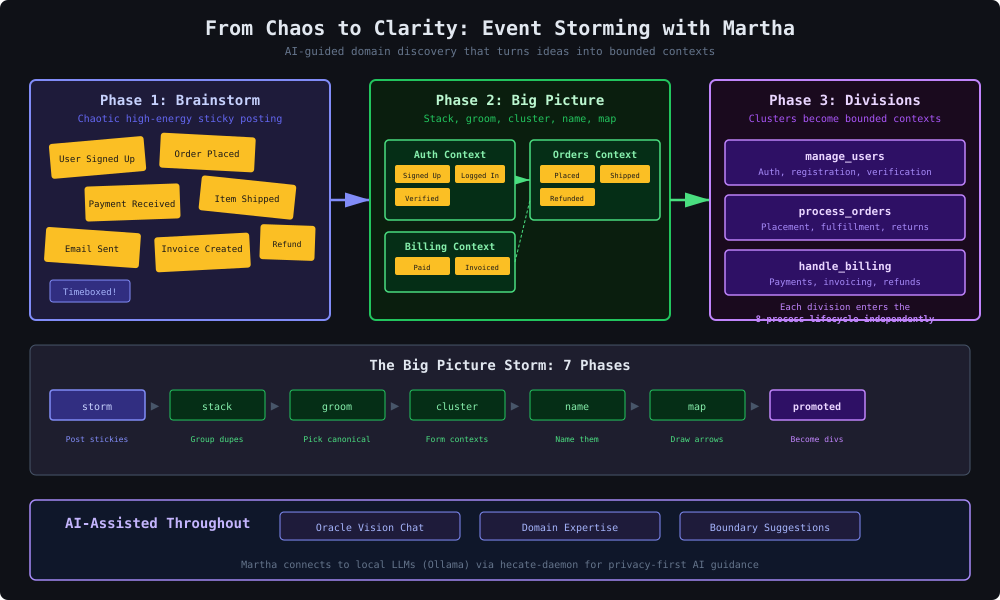
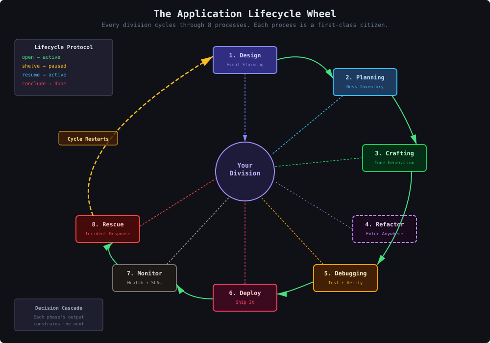
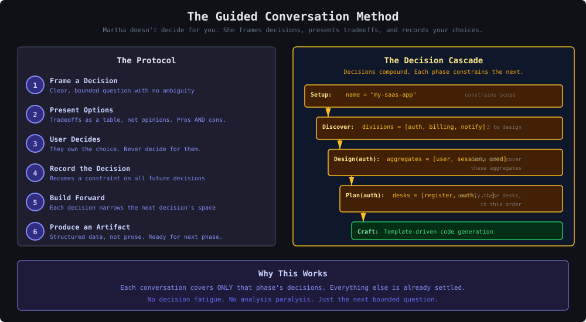
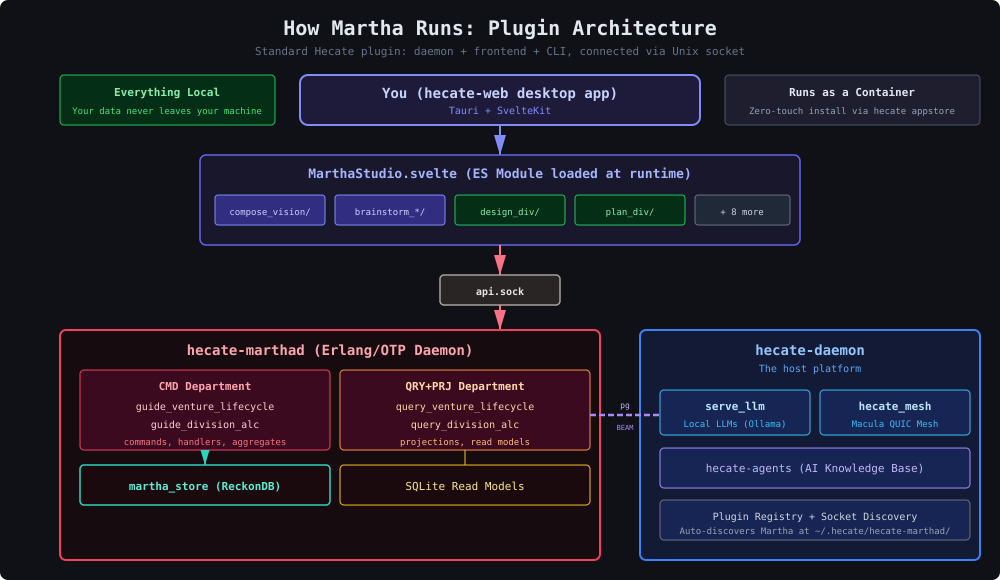

Your AI-Powered Software Development Guide

You have an idea. A vision for software that solves a real problem.
But between the idea and the running system, there's a vast wasteland of decisions:
Most developers stumble through this blind. They start coding too early, discover architectural mistakes too late, and spend months refactoring what should have been designed right from the start.
What if there was a guide?
Martha is a Hecate plugin that implements the Application Lifecycle (ALC) — a structured, AI-assisted process for building software from vision to production.
Martha is to the Application Lifecycle what QuickBooks is to accounting.
QuickBooks doesn't do your accounting for you. It implements the discipline — double-entry bookkeeping, chart of accounts, reconciliation. You make the decisions; QuickBooks ensures they're structured, recorded, and consistent.
Martha does the same for software development. She implements the discipline — domain discovery, event storming, vertical slicing, process-centric architecture. You make the decisions; Martha ensures they compound correctly.
You start with a conversation. Martha's Oracle — powered by your local LLM (Ollama, fully private) — asks you about your vision. Not technical questions. Business questions:
From this conversation, Martha produces a venture brief — the seed from which everything grows.
Martha guides you through Event Storming — the domain discovery technique pioneered by Alberto Brandolini. But instead of a room full of people and physical sticky notes, Martha provides a digital board with AI assistance.

The process has seven phases:
The AI assists throughout — suggesting domain events you might have missed, helping identify boundaries, flagging potential coupling issues.
Each division enters the 8-process lifecycle wheel:

The lifecycle is a cycle, not a line. After rescue, you're back at design — armed with production insights. Every iteration makes the software better.
Martha doesn't throw you into a blank canvas and say "design your architecture." That leads to analysis paralysis.
Instead, she uses the Guided Conversation Method:

This creates a decision cascade. Your venture name constrains your discovery scope. Your discovered divisions constrain what needs designing. Your design constrains your planning. Your plan constrains what gets generated.
By the time you reach code generation, most decisions are already made. The code practically writes itself — because the architecture was decided through structured, recorded conversations.
Martha runs entirely on your machine. No cloud. No telemetry. Your code, your data, your decisions.

A Svelte 5 component loaded at runtime by hecate-web. Organized as vertical slices — one directory per ALC task.
An Erlang/OTP application running in a container. Event-sourced with CQRS. Every decision is an immutable fact in the event store.
Connects to your local LLMs through hecate-daemon. Ollama, llama.cpp, whatever you run locally. No API keys. No cloud calls.
Install Martha from the Hecate appstore. One click. The container starts, the socket appears, hecate-web discovers it automatically.
Traditional tools model development as data management: create projects, update tasks, delete items. Martha models development as processes. Each phase is a first-class citizen with its own lifecycle, state, and history.
Every decision is an immutable event. Trace back: why was this boundary drawn? What tradeoffs were considered? This isn't just an audit trail — it's institutional memory.
Software isn't "done" when you ship v1. Monitoring feeds into rescue. Rescue feeds into design. Each cycle makes the software deeper.
Your venture vision, domain events, architectural decisions — none of it leaves your machine. Martha runs locally. The AI runs locally. You own everything.
Martha. Named for the tradition of guidance. Not a chatbot. Not an autocomplete. A guide who frames decisions, presents tradeoffs, and records your choices.
She stands at the crossroads between intention and implementation, holding the keys to structured software development.
She is the tool that implements the discipline.